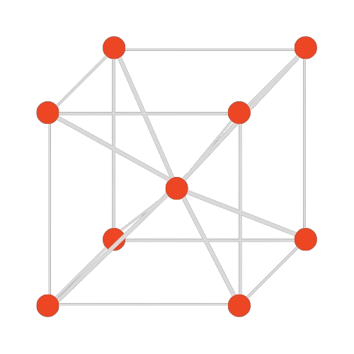

BCC Technologies
Simplificamos lo complejo y expandimos lo interesante.
Software e instrumentación científica para análisis por imagen y señal. Resultados claros, métodos explícitos y entregables reproducibles.
Imagen (óptica / SEM)
EIS / sensores
Análisis reproducible

Diseño con intención
La elegancia no viene de alternar colores. Viene de jerarquía, distancias y consistencia. Un sistema visual discreto que deja respirar el contenido.
Ritmo
Espacios consistentes
Claridad
Lectura fácil (70ch)
Sistema
Componentes repetibles
Acento
Color solo cuando importa
Destacados
Una selección corta. Nada de saturación: solo lo que más explica el valor.
Métodos y documentación
Menos fricción cognitiva. Más ciencia útil.
Si el usuario tiene que pelear con la interfaz, pierde tiempo. Diseñamos para que el foco sea el fenómeno.
Cómo trabajamos
Un flujo corto y repetible. Menos reuniones, más trazabilidad.
- Diagnóstico: objetivo, datos, restricciones.
- Prototipo: validación rápida del método.
- Entrega: software o resultados + documentación.
- Iteración: mejoras sin romper lo anterior.

Preguntas rápidas
Detalles útiles, sin abrumar.
¿Esto es para academia o industria?
Para ambos. Lo importante es el estándar: resultados trazables y reportes claros.
¿Qué tipo de datos manejan?
Imagen (microscopía, cámaras) y señal (sensores). El formato depende del caso.
¿Pueden adaptar un módulo a mi necesidad?
Sí. Preferimos extensiones limpias antes que excepciones frágiles.